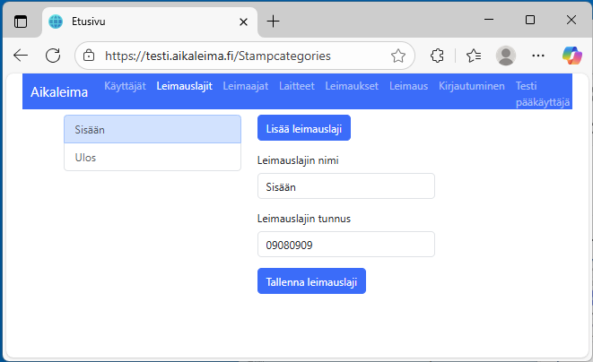
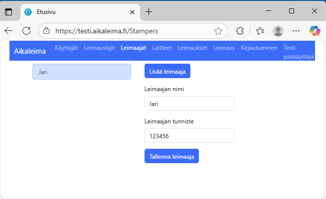

Ylläpito
 Kun sovellus käynnistyy, se pyytää ensimmäisellä käyttökerralla kirjautumaan. Kirjautumistunnus on testiympäristössä "testi"
ja tuotantoympäristössä asiakaskohtainen tunnus. Kirjautumistoiminnon avulla pääsee laitteella asiakastietojen ylläpitoon.
Kirjautumisavain on kertakäyttöinen ja se syötetään kirjautumisnäytössä. Kirjautuminen aktivoi tunnuksen ja yksilöi laitteen.
Jatkossa ohjelma käyttää omaa sisäistä tapaa yksilöidä tiedonsiirto selaimen ja palvelimen välillä. Sovelluksesta ei kirjauduta ulos,
joten selainistunto pysyy kirjautuneena. Mikäli sovellus ei toimi ja vaaditaan uudelleenkirjautuminen,
käyttäjän tulee tilata tunnuksen avaus asiakkaan sopiman käytännön mukaisesti.
Kirjautumisavaimen luontitoiminnolla tunnuksella voidaan kirjautua uudelleen samalla tai toisella laitteella.
Kirjautumistunnus on sidottu selaimeen tai laitteeseen. Samaa tunnusta ei voi myöskään aktivoida toiselle selaimelle tai laitteelle samanaikaiseen käyttöön;
jokaiselle selaimelle tai laitteelle vaaditaan oma tunnus.
Kun sovellus käynnistyy, se pyytää ensimmäisellä käyttökerralla kirjautumaan. Kirjautumistunnus on testiympäristössä "testi"
ja tuotantoympäristössä asiakaskohtainen tunnus. Kirjautumistoiminnon avulla pääsee laitteella asiakastietojen ylläpitoon.
Kirjautumisavain on kertakäyttöinen ja se syötetään kirjautumisnäytössä. Kirjautuminen aktivoi tunnuksen ja yksilöi laitteen.
Jatkossa ohjelma käyttää omaa sisäistä tapaa yksilöidä tiedonsiirto selaimen ja palvelimen välillä. Sovelluksesta ei kirjauduta ulos,
joten selainistunto pysyy kirjautuneena. Mikäli sovellus ei toimi ja vaaditaan uudelleenkirjautuminen,
käyttäjän tulee tilata tunnuksen avaus asiakkaan sopiman käytännön mukaisesti.
Kirjautumisavaimen luontitoiminnolla tunnuksella voidaan kirjautua uudelleen samalla tai toisella laitteella.
Kirjautumistunnus on sidottu selaimeen tai laitteeseen. Samaa tunnusta ei voi myöskään aktivoida toiselle selaimelle tai laitteelle samanaikaiseen käyttöön;
jokaiselle selaimelle tai laitteelle vaaditaan oma tunnus.
Kotisivu
 Kirjautumisen jälkeen avautuu kotisivu. Kotisivulla on linkit eri toimintoihin. Toiminnot on kuvattu alla. Kotisivulle on jatkossa tavoitteena lisätä tilastoja leimauksista
ja virhelokien näyttö.
Kirjautumisen jälkeen avautuu kotisivu. Kotisivulla on linkit eri toimintoihin. Toiminnot on kuvattu alla. Kotisivulle on jatkossa tavoitteena lisätä tilastoja leimauksista
ja virhelokien näyttö.
Käyttäjät
 Käyttäjänäytöllä ylläpidetään asiakkaan aikaleimapalvelun ylläpitäjien tietoja. Tyypillisesti 1–2 henkilöä, jotka kirjautuvat omilta työasemiltaan palveluun.
Käyttäjäkohtaisesti voidaan laittaa pin-koodi suojaamaan kirjautumista. Käyttäjä antaa haluamansa pin-koodin enimmäisellä kirjautumisella ja se tallentuu palvelimelle.
Jatkossa sovelluksen käynnistyessä ohjelma kirjautuu selaimen indexdb kannassa olevalla kirjautumisavaimella ja jos kirjautuminen onnistuu ohjelma vielä kysyy käyttäjän pin-koodin jolla varmistetaan että oikea käyttäjä on kirjautumassa.
Käyttäjänäytöllä ylläpidetään asiakkaan aikaleimapalvelun ylläpitäjien tietoja. Tyypillisesti 1–2 henkilöä, jotka kirjautuvat omilta työasemiltaan palveluun.
Käyttäjäkohtaisesti voidaan laittaa pin-koodi suojaamaan kirjautumista. Käyttäjä antaa haluamansa pin-koodin enimmäisellä kirjautumisella ja se tallentuu palvelimelle.
Jatkossa sovelluksen käynnistyessä ohjelma kirjautuu selaimen indexdb kannassa olevalla kirjautumisavaimella ja jos kirjautuminen onnistuu ohjelma vielä kysyy käyttäjän pin-koodin jolla varmistetaan että oikea käyttäjä on kirjautumassa.
Leimauslajit

Leimauslajit sisältävät nimitiedon ja asiakkaan järjestelmien mukaisen leimaustietoon liittyvän avaimen. Näin tietojen siirrossa asiakasjärjestelmiin voidaan yksilöidä leimaustapahtuma.
Leimaajat

Leimaajat sisältävät nimitiedon ja asiakkaan järjestelmien mukaisen leimaajaan liittyvän avaimen. Näin tietojen siirrossa asiakasjärjestelmiin voidaan yksilöidä leimaustapahtuma.
Laitteet
 Laitteet sisältävät yksilöivän nimitiedon. Laite voi olla henkilökohtainen, kuten puhelinsovellus, jolloin laite kytketään leimaajatiedossa olevaan tietoon.
Laite voi olla yleinen leimauspääte, jolloin leimaustilanteessa täytyy leimaajan syöttää henkilökohtainen avain leimaustapahtuman kohdistamiseksi. Laitteen aikatiedot käytetään leimauksen perusteena.
Laitteelle voidaan myös laittaa GPS-asetus päälle jolloin leimaustilanteessa tallennetaan leimauksen yhteyteen myös koordinaatit. Ohjelma kysyy oikeutta sijaintitiedon käyttöön enimmäisellä kerralla selaimessa ja puhelimessa.
Laitteet sisältävät yksilöivän nimitiedon. Laite voi olla henkilökohtainen, kuten puhelinsovellus, jolloin laite kytketään leimaajatiedossa olevaan tietoon.
Laite voi olla yleinen leimauspääte, jolloin leimaustilanteessa täytyy leimaajan syöttää henkilökohtainen avain leimaustapahtuman kohdistamiseksi. Laitteen aikatiedot käytetään leimauksen perusteena.
Laitteelle voidaan myös laittaa GPS-asetus päälle jolloin leimaustilanteessa tallennetaan leimauksen yhteyteen myös koordinaatit. Ohjelma kysyy oikeutta sijaintitiedon käyttöön enimmäisellä kerralla selaimessa ja puhelimessa.
Leimaukset
 Laitteet sisältävät yksilöivän nimitiedon. Laite voi olla henkilökohtainen, kuten puhelinsovellus, jolloin laite kytketään leimaajatiedossa olevaan tietoon.
Laite voi olla yleinen leimauspääte, jolloin leimaustilanteessa täytyy leimaajan syöttää henkilökohtainen avain leimaustapahtuman kohdistamiseksi. Laitteen aikatiedot käytetään leimauksen perusteena.
Listassa näkyy sijaintitiedon ja malliksi nyt laitetu linkki google mapsiin. Kuten kuvasta jo näkee, selaimen antama sijainti ei ole tarkka, mutta puhelimen GPS-tieto on tarkka.
Laitteet sisältävät yksilöivän nimitiedon. Laite voi olla henkilökohtainen, kuten puhelinsovellus, jolloin laite kytketään leimaajatiedossa olevaan tietoon.
Laite voi olla yleinen leimauspääte, jolloin leimaustilanteessa täytyy leimaajan syöttää henkilökohtainen avain leimaustapahtuman kohdistamiseksi. Laitteen aikatiedot käytetään leimauksen perusteena.
Listassa näkyy sijaintitiedon ja malliksi nyt laitetu linkki google mapsiin. Kuten kuvasta jo näkee, selaimen antama sijainti ei ole tarkka, mutta puhelimen GPS-tieto on tarkka.
Leimaus
 Sovelluksella voidaan tehdä myös leimaus. Silloin kuitenkin tulee kirjautua leimaustunnuksella, joka on eri kuin ylläpidon tunnus.
jos laite on yleinen leimauspääte, tulee leimaajan syöttää henkilökohtainen avain leimaustapahtuman kohdistamiseksi. Sopivilla lisälaitteilla
voidaan käyttää myös viivakoodinlukijaa vaikkapa henkilökortista viivakoodin lukemiseen tai RFID-lukijaa sirulta leimaajan tunnistamiseen.
Sovelluksella voidaan tehdä myös leimaus. Silloin kuitenkin tulee kirjautua leimaustunnuksella, joka on eri kuin ylläpidon tunnus.
jos laite on yleinen leimauspääte, tulee leimaajan syöttää henkilökohtainen avain leimaustapahtuman kohdistamiseksi. Sopivilla lisälaitteilla
voidaan käyttää myös viivakoodinlukijaa vaikkapa henkilökortista viivakoodin lukemiseen tai RFID-lukijaa sirulta leimaajan tunnistamiseen.